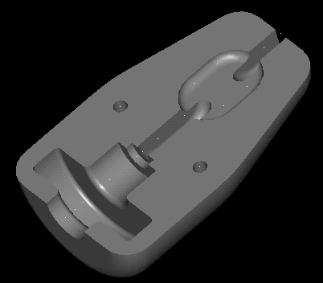
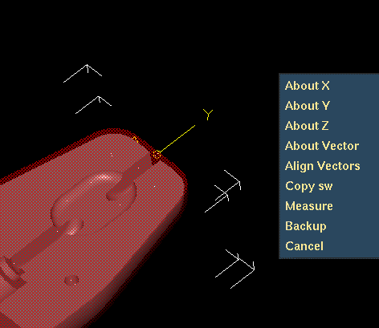
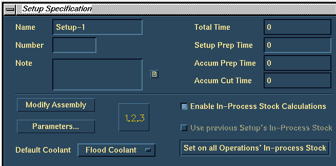

| Next Page | Previous Page | First Page |
Use the Assembled config.
SAVE the model file.
Design -> Manufacturing -> Master Modeler

Put Away the Electric Chain Hoist assembly.
Get the Hook Block part (in HOIST PARTS bin) to the workbench.
Master Modeler -> Generative Machining
You are now in the Open Job form, select Pick Part button on the form and select the Hook Block part, take the default Job name (Job1) and OK to close the form.

Modify Setup and then Modify Assembly. This puts you into Assemble Setup.

Add the Hook Block Stock part as Stock for these machinining operations.
Add Stock, RMB, Get, From Bin, pick Hook Block Stock from bin HOIST PARTS

Select the Hook Block Stock part and turn ON translucency.


Revolve BOTH instances, pick a center point, revolve about Y axis, 180 degrees.
NB: This just means we can use the default Z-axis for the tool axis.
Assemble Setup -> Generative Machining

Turn ON the Enable In-Process Stock Calculations, and hit the Set on all Operations' In-process Stock.